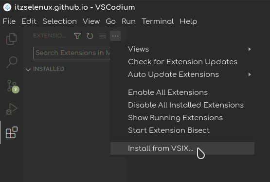

vscode-lm-theme
Download Star Issuevscode-lm-theme is a Linux Mint inspired theme for Visual Studio Code

Installation
open Visual Studio Code, go to extensions, click on 3 dots, and select install from vsix
You can download it from Download page